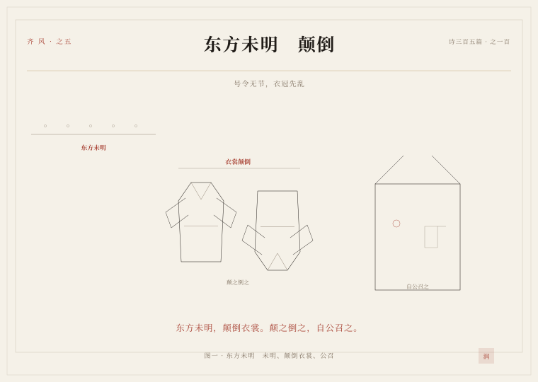
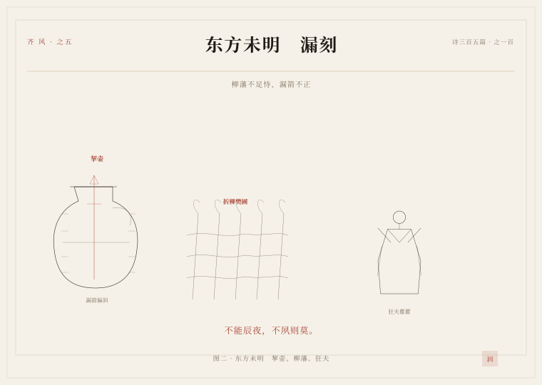

第一百篇 东方未明
齐风 · 之五 SJ100
朗读 · 普通话
依经文原文朗读，章次不读出；配古琴底乐，不改速、不加拖腔。全库同一音色（豆包 TTS），非播音员录制。
一 解题
诗三判：
- 谁在说：一个被“公”召呼催起的臣子/役夫。天还未明，他颠倒衣裳；刚穿一半，召者已到。
- 说什么事：三章由未明到未晞，由颠倒衣裳到颠倒裳衣，由公召到公令；末章折柳樊圃、狂夫瞿瞿，归到“不能辰夜，不夙则莫”。
- 为何编在此：099 写“私就”，100
写“公召”。一奔一召，齐国政事之乱并见。
《毛序》：“《东方未明》，刺无节也。朝廷兴居无节，号令不时，挈壶氏不能掌其职焉。”
朱子《诗集传》：“赋也。自，从也。群臣之朝，别色始入。此诗人刺其君兴居无节，号令不时。言东方未明，而颠倒其衣裳，则既早矣；而又已有从君所而来召之者焉，盖犹以为晚也。折柳樊圃，比也。柳，杨之下垂者，柔脆之木也。樊，藩也。圃，菜园也。瞿瞿，惊顾之貌。夙，早也。折柳樊圃，虽不足恃，然狂夫见之，犹惊顾而不敢越；以比辰夜之限甚明，人所易知，今乃不能知，而不失之早，则失之莫也。”
本库的看法：《东方未明》是一首把“召”写成“颠倒”的诗。
不是衣裳难穿，是号令无时；不是夜短，是令急。衣冠先乱，朝堂后乱。
末章以“折柳樊圃”作比：柳枝为藩，本不足恃，狂夫犹知惊顾；掌漏刻的人却分不清辰夜。一个“不能”，把君、臣、吏三层都收了。
先辨五事：“衣裳”是上衣下裳，不是“衣服”泛称；“颠倒”是穿反、次序乱，不是“神魂颠倒”；“公”是君所/公家，不是“公爵”；“狂夫”是不任事者，不是“疯子”；“莫”读
mù，是“暮”，不是“不要”。
二 经文
第一章
东方未明，颠倒衣裳。
颠之倒之，自公召之。
第二章
东方未晞，颠倒裳衣。
倒之颠之，自公令之。
第三章
折柳樊圃，狂夫瞿瞿。
不能辰夜，不夙则莫。
分章：三章，章四句。
三 韵读
- 一章：明、裳，阳部；倒、召，宵部。
- 二章：晞、衣，微部；颠、令，真部。
- 三章：圃、瞿，鱼部；夜、莫，铎部；鱼铎通押。
读法：一章阳部开阔，二章微部细，三章鱼铎短促；天越未明，声越促；令越急，韵越碎。
四 字义与名物
- 未明/未晞：天未亮/日之光气未升；晞，明之始升。
- 衣裳：上曰衣，下曰裳；颠倒，上衣下裳穿反。
- 公：君所、公家；召/令：召呼、号令。
- 折柳樊圃：折柳枝作菜园的藩篱；柳柔脆，不足为藩。
- 狂夫：狂愚、不任事之人；此指掌漏刻失职者。瞿瞿：惊顾之貌。
- 辰夜：时辰、昼夜；夙：早；莫：暮，晚。
五 今译
东方还没有亮，衣裳就穿颠倒了。颠来倒去，因为公家来召。
东方还没有晞，裳衣就穿颠倒了。倒来颠去，因为公家来令。
折柳枝做菜园的藩篱，狂夫见了也惊顾。可他分不清辰夜，不是太早，就是太晚。
六 章旨
- 一章：写“未明”与“召”。天未明而召已到；不是臣起晚，是君召早。
- 二章：写“未晞”与“令”。由召到令，号令更硬；由衣裳到裳衣，颠倒更乱。
- 三章：写“柳藩”与“漏刻”。柳藩不足恃，狂夫犹知畏；掌漏者却失职。以易知之事，责不能之人。
- 总收：号令无节，衣冠先乱；不是夜短，是令急。
一朝失时，百官皆颠倒。
七 诗教
- 兴：前二章用“赋”，直陈颠倒；末章用“比”，以柳藩比漏刻。赋到极处，转比；比一落，责在吏。
- 观：观“朝廷兴居”。君起何时、臣朝何时、吏告何时，三层一时；一时乱，三事皆乱。
- 群：君召臣，臣朝君，吏告时；群在朝，乱在夜。
- 怨：诗里有怨，怨在“不能”。不怨君，怨掌漏者；不怨夜，怨号令。
八 分寸与边界
- 不可把“颠倒”当醉态。它是穿反衣裳；一读醉态，朝令就成笑话。
- 不可把“公”当公爵。它是君所/公家；一读公爵，诗就成贵族家事。
- 不可把“狂夫”当疯子。它是不任事者；一读疯子，末章就成寓言。
- 不可把“柳藩”当实景。它是比，喻漏刻之限；一读实景，末章就离题。
- 不可把“莫”当“不要”。它是“暮”；一读不要，末句就不通。
九 存疑
- 诗旨：毛序“刺无节，挈壶氏不能掌职”；朱子同。本库从“号令不时”读。
- “狂夫”：毛传“无守之貌”，指不任挈壶者；一说“狂夫”为役夫。从“不任事”，才与“不能辰夜”相应。
- “折柳樊圃”：毛传“柳柔脆，无益于禁”；朱子“比辰夜之限”。一喻一对比，本库从朱子。
- “不能辰夜”：一谓不能守时，一谓不能分昼夜。两读相通。
- 作者与年代：毛序属哀公；朱子不言何公。无确证。
十 跨典
- 《周礼·夏官·挈壶氏》：“掌挈壶以令军井……以水火守之，分以日夜。”——掌漏刻之官；此诗责其失职。
- 《礼记·玉藻》：“朝，辨色始入。”——群臣待辨色而入朝；此诗未明即召，正反其礼。
- 《论语·子路》：“欲速则不达。”——号令太急，事反不成；此诗“颠倒衣裳”即其状。
- 《诗本音》：三章阳/宵、微/真、鱼/铎，见卷五；韵部按古韵推定。
十一 双卡与图
双卡八对：
| 衣裳（上衣下裳） |
衣裳（衣服泛称） |
| 颠倒（穿反） |
颠倒（神魂颠倒） |
| 公（君所/公家） |
公（公爵） |
| 召/令（召呼/号令） |
召（召见） |
| 狂夫（不任事者） |
狂夫（疯子） |
| 樊（藩篱） |
樊（樊笼） |
| 辰夜（时辰昼夜） |
辰夜（星辰之夜） |
| 莫（暮，mù） |
莫（不要，mò） |

图一 · 东方未明 未明、颠倒衣裳、公召

图二 · 东方未明 挈壶、柳藩、狂夫
读图三处：
- 衣裳颠倒：图一左一件上衣反穿、右一件下裳倒置，中间一条腰带散开；不画人，只画衣。
- 召者在门外：图一右门外一盏灯、一只手持符；灯比人亮，令比夜急。
- 柳藩与漏壶：图二左折柳为篱，右一只漏壶，壶箭偏斜；柳篱不足恃，漏箭不正，两层都失守。